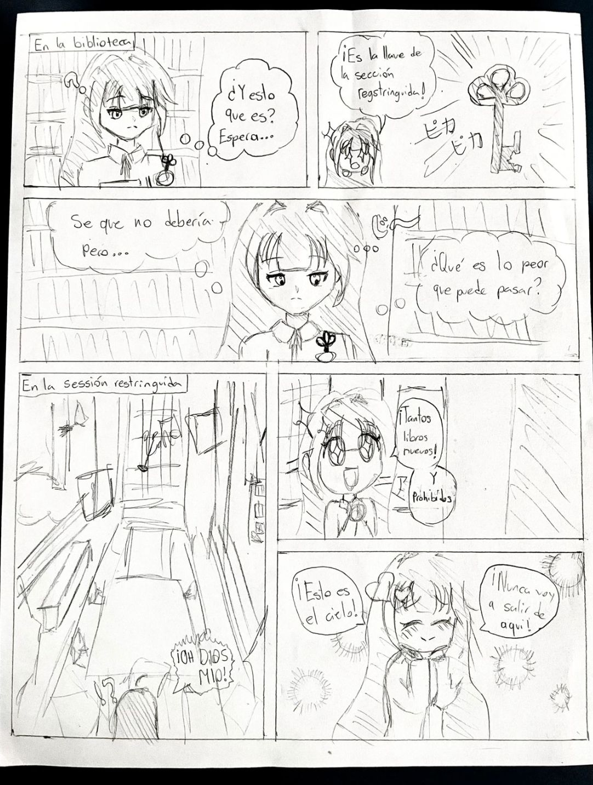

En 1 de diciembre de 2025 fue el día donde los de primer semestre presentó su proyecto personal. Si fueron al centro de los puestos, verán que alguien hizo un manga corto y inconcluso basado en el juego de Genshin Impact. Estuvo inconcluso por falta de tiempo de realización del manga (no me culpen). Si tienes mucha intriga de lo que pasó después, ¡no te preocupes! Soy la autora. Hola soy Sumida, la misma autora de “Your final step from the dark” y vengo a hablar sobre el resumen, a continuación del primer capítulo de ese mismo manga. También unos datos curiosos sobre el desarrollo de la historia y una de las protagonistas que creé.
Vayamos desde el principio porque me imagino que el 95% que leen esto no tienen ni la maldita idea que fue mi proyecto personal ʕʘ‿ʘʔ. En mi PP, mi producto se trataba de crear un manga con una historia mía, así aprendiendo la creación de manga, anatomía y teoría de colores. No me gusto para nada lo que hice porque lo hice a digital y no soy nada buena (a pesar de que hago obras muy buenas en físico). Gracias a eso, dejé inconcluso mi historia.
Ahora que aclaré esa parte, vayamos por las características de la elaboración de mi manga. En la historia, hay 2 dos protagonistas, Albedo y mi personaje creado por mi (la chica) … ¡Suzume! En pocas palabras es mi alter-ego, ya que ella es más abierta con sus opiniones, más expresivas con Albedo o personas que considera su familia, tiene mejor condición física y lo más importante, ella es terca con sus ideas, algo que yo envidio desde lejos porque soy bastante dependiente de otros a pesar de que mis amigos me dicen que se poner limites. De todos modos, aquí va mi resumen:
La historia empieza con Albedo, jefe alquimista de los caballeros de Favonius, caminando alrededor de las calles de Mondstadt. Se encuentra con la Líder de esa misma organización en la que Albedo trabaja, Jean. Albedo se entera que Jean se ve más cansada de lo usual entonces le pregunta, “¿Qué pasa?”. La verdad era que hay reportes sobre un monstruo con manos negras en una nieve montañosa Dragonspine, eso le tenía preocupado Jean.
Albedo como todo un caballero, dijo que se iba encargar de encontrar tal monstruo. Fue a Dragonspine mientras sobrepensaba sobre el monstruo. Luego, se encontró a una chica inconsciente en la nieve, de alguna manera tenía rastros de sangre en su kimono viejo y por supuesto, manos negras. Albedo decide llevársela al campamento y con alquimia, le salva la vida de hipotermia, aunque cuando la chica despertó…su primer instinto fue clavar su kunai en el cuello de Albedo. Por suerte Albedo lo esquiva y la chica lo maldice de porqué le salvo la vida si solo trae miseria al mundo. El no entiende.
“Mis manos de tinta son una maldición, cualquier ser vivo que toco solo causa muerte” ella responde de manera fría. Albedo solo la abraza, no muere porque el es un humano sintético, incapaz de morir como otros. “Me imagino tu sufrimiento de solo crear caos, debe ser horrible ver la muerte con tus ojos. Estoy para ti, no estas sola” esas fueron las palabras que Albedo dijo antes de hacer llorar a Suzume.